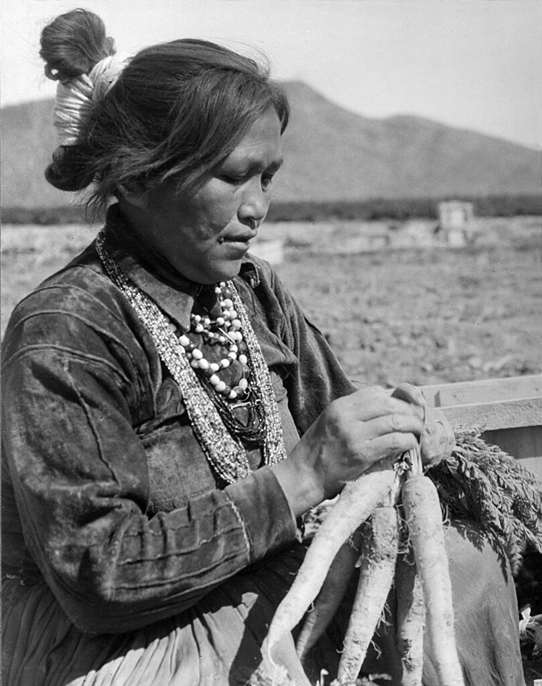

Learning From the Past
Gratitude
The Diné give thanks to the One Who Watches Us By Sunlight for:
- The Sun
- The Earth
- The Moisture
- The Atmosphere
The Diné do not worship Mother Earth, instead they view her as an equal being, living alongside them.
They share gratitude to the One Who Watches Us By Sunlight on behalf of Mother Earth.
Day-to-Day Life
The Diné use their hair to represent their spirit.
A tsiiyéél/Navajo bun is a common hair style among the Diné.
The white strands are a representation of the sun intertwined with a Diné person’s spirit.
The Diné live in hogans which are viewed as an extension of the Earth.
They are built facing the East so the sun is the first thing a Diné person sees when they come out in the morning.

TO THE FUTURE